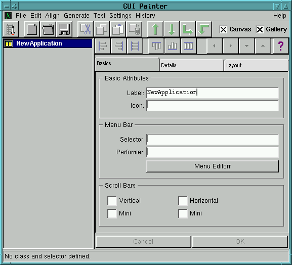
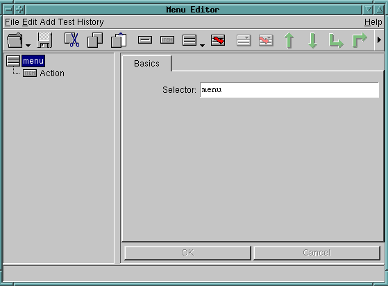
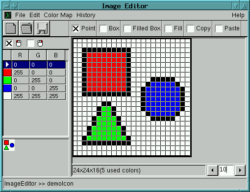

Graphical User Interface (GUI) Tools
The GUI Painter
The GUI Painter allows for Graphical User Interface Applications to be
built quickly and maintained easily.
Using Drag & Drop, the application's window and components (widgets) are placed
onto a canvas and connected via valueHolder aspects.
Finally, the GUI Painter generates a windowSpec method
containing the symbolic GUI description and the required aspect methods,
which setup the valueHolders.

The Menu Editor
Similar to the GUI Painter, PopUpMenus and MenuPanels can be defined easily
with the Menu Builder.
The Menu Painter generates a menuSpec method, which contains a symbolic
description of the menu items.

The Bitmap Editor
The bitmap editor can be used to edit bitmap files or image resource methods
(which contain the bitmap image within the program).
The editor can read and write PCX, XPM, XBM, GIF, TIFF, BMP and a few other image
formats.

New Language & System Features
Private classes
Classes can now be defined to be private to some other class, making them
effectively invisible to other classes.
This features helps to strukture big projects and avoid name conflicts.
Syntax coloring
Source code is now colored and emphasized to highlight syntactic
features, such as message selectors, variables etc.
The color and emphasis of particular syntactic elements is fully
configurable.
Improved Just-In-Time (JIT) Translation
The JIT translator has been improved and generates optimized inline code
for more common constructs.
Integrated Java Virtual Machine
This feature is still under construction and will be released in one of
the upcoming releases. It will allow for binary Java class files to be loaded
into the system and be integrated seamless into the Smalltalk class hierarchy.
New Widget Elements
New Extended ComboBox
Allows for an arbitrary dialog to be pulled down as a comboBox menu.
Improved Notebook Widget
Improved DataSet Widget
Improved Hierarchical List Widgets
3D Technical Data Viewer (TDV) Framework
Using openGL, technical data can be visualized easily.
Includes a generic, extendable framework for 3D visualization and interaction.
Additional AddOn Products
C Type Parser, Type Hierarchy
Allows for C-Types and #defines to be read from a C-Header file and
generates corresponding type objects.
ASN1 Parser, Type Hierarchy & Coders
Reads ASN1 module definitions (incl. Macros) and/or GDMO definitions to be parsed and
returns a collection of types and/or managed object definitions.
These definitions can be used to create instances of ASN1 types or
managedObjects.
Includes BER and DER coders/decoders and allows for other coders to be plugged in
easily.
OSI ACSE Access
Interface to the Sun-Solistice OSI ACSE implementation.
An interface to other packages (ISODE) is being prepared.
Requires the ASN1 package.
OSI ROSE Protocol implementation
A Smalltalk implementation of the OSI-ROSE Protocol layer.
Requires an ACSE implementation and the ASN1 package.
OSI CMISE Protocol implementation & support framework
A Smalltalk implementation of the OSI-CMISE Protocol layer.
Requires the ROSE and ASN1 packages.